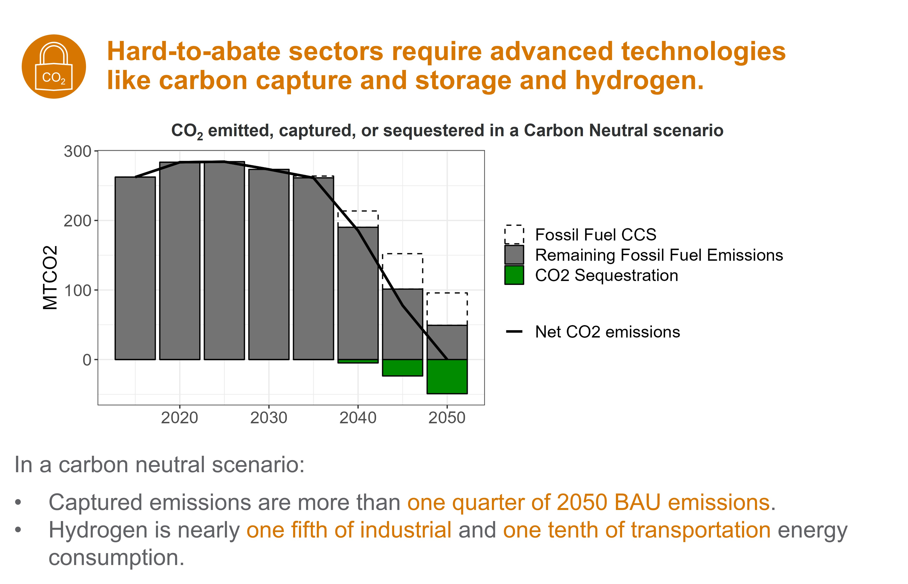

Pathways to Carbon Neutrality for Malaysia and Kuala Lumpur
Executive Summary


Pathways to Carbon-Neutrality in 2050

Background
Southeast Asia as a whole is experiencing a period of rapid growth and urbanization, which can present challenges for decarbonization efforts. The region also faces a heightened risk for climate impacts; in particular, Kuala Lumpur is vulnerable to the effects of high heat as well as increased flooding and droughts. Kuala Lumpur’s vision for approaching these issues is to transform the city into one that is sustainable and livable through its primary climate policies and plans: the Kuala Lumpur Low Carbon Society Blueprint 2030 (KLLCSBP2030), the draft Kuala Lumpur Structure Plan 2040 (KLSP2040), and the Kuala Lumpur Climate Action Plan 2050 (KLCAP2050). The most recent plan was developed to address and fulfill a carbon neutral target by 2050, increase resilience to climate hazards by 2050, incorporate a more inclusive approach to climate planning, and establish a governance structure that will collaborate with all stakeholders to reach climate action goals. Kuala Lumpur developed two scenarios under this plan, a Council-Led scenario aligned with targets from the KLLCSBP2030 and an Integrated Approach scenario highlighting the importance of collaboration across Kuala Lumpur, the Federal government, and other agencies in reaching emissions targets.
The US-ASEAN Smart Cities Partnership (USASCP) uses innovative approaches across sectors to address the challenges and opportunities of energy development and urbanization in ASEAN Member States. In support of the USASCP, the U.S. Department of State, Bureau of Energy Resources’ (ENR’s) Power Sector Program (PSP) is partnering with Kuala Lumpur to support existing plans to achieve carbon neutrality. The U.S. Department of Energy’s (DOE’s) Pacific Northwest National Laboratory (PNNL) will implement the program by collaborating with local partners, including the Kuala Lumpur City Hall (DBKL or KLCH) and the Universiti Teknologi Malaysia (UTM). PNNL will use its Global Change Analysis Model (GCAM) to model various policy trajectories towards net zero by 2050 and corresponding economic, environmental, and social impacts.
Prior to COP26, Malaysia announced that it had set a goal to become carbon neutral as early as 2050. Soon after, Kuala Lumpur committed to becoming a carbon neutral city by 2050. Carbon neutrality refers to a state of “net zero” emissions, where carbon emissions are reduced as far as is feasibly possible, with the remaining emissions offset in some manner.
As a large city and Malaysia’s capital, Kuala Lumpur has an important role in the decarbonization of Malaysia. Kuala Lumpur has outlined several climate-focused plans in the past:
- KLCH Carbon Management Plan 2017-2022: Created to reduce absolute carbon emissions by 20% from Kuala Lumpur City Hall owned, managed, and operated assets.
- KL Low Carbon Society Blueprint 2030: Developed with UTM, this plan aims at reducing 70% of carbon emissions per unit GDP by 2030.
- KL Draft Structure Plan 2040: Focused on the direction of urban development, with targets for mitigation and adaptation measures.
- KL Climate Action Plan 2050: Targeted on achieving carbon neutrality, addressing climate change, and inclusive planning through strong governance and collaboration.
PNNL and UTM will continue to support Kuala Lumpur on its journey to carbon neutrality. Using the modeling approach outlined below, PNNL will provide an analysis of scenarios developed in the KLCAP2050, encompassing targets outlined in previous plans and policies. PNNL will also provide a national level analysis, looking at Malaysia-level policies. These include:
- National Transport Policy
- National Renewable Energy Policy and Plan
- Malaysia Renewable Energy Roadmap
- National Energy Efficiency Action Plan
- National Policy on Climate Change
- Green Technology Master Plan Malaysia
Methodology
Integrated Assessment Models (IAMs) are computational models that use links and feedbacks between socioeconomic and environmental systems to assess the implications of technology and policy choices in the context of global climate change. IAMs can provide a holistic approach to energy sector planning by considering multi-sector dynamics and global processes. GCAM, an IAM developed at PNNL, incorporates socioeconomics, energy, land use, water, and climate system (Figure 1). The model is global but can also be used to assess specific regions and fine scale processes; PNNL has developed both Malaysia and Kuala Lumpur regions within the model for national and city level analyses. GCAM utilizes the most up to date data on population, GDP, technology characteristics, policies, resource availability, and other inputs. It has the detailed representation of energy technologies in different sectors, including electricity, buildings, transportation, industry, hydrogen production, and other energy supply sectors. The model produces both historical and projected future outputs based on this information. These outputs include greenhouse gas emissions, electricity prices, energy supply and demand, and other indicators at five-year time steps from a historical baseline year to the desired end year. PNNL will use GCAM to assess the implications of Kuala Lumpur’s various climate-focused plans.
Conceptual diagram of GCAM

Analysis will be performed at both the national and city-levl in Malaysia in Kuala Lumpur. The map to the right shows Kuala Lumpur’s location within Malaysia.Scenarios will be assessed up from the year 2015 to the year 2100, with the GCAM analysis conducted at five-year intervals within this range.
Map of analysis regions in Malaysia

Scenarios
Three unique scenarios are developed to provide a comprehensive set of future pathways. The Business as Usual scenario uses historical energy and emissions, combined with expected future socioeconomic trajectories and baseline technology assumptions, to project future conditions in the absence of additional policies or constraints. The Policies scenario assumes that Malaysia implements a set of policies in the power, buildings, industry, and transportation sectors consistent with current plans, priorities, and targets. The Carbon Neutral scenario combines these policies with an emissions constraint to determine the additional measures needed to reach carbon neutrality by 2050. The policies considered include Malaysia’s national power development plans, as well as standards, regulations, and measures to promote energy efficiency, renewable energy expansion, and reduction of greenhouse gas emissions.
- Business as Usual: This scenario uses a reference projection without imposing any policies or constraints.
- Policies: Policies representing existing city and national targets
- Carbon Neutral: Scenario using most efficient pathway to national carbon neutrality by 2050.
Results
The following figures show results from the analysis to support each of the key insights. Further details and additional results can be found on Modeling-Malaysia page.




WORK IN PROGRESS
- DO NOT CITE